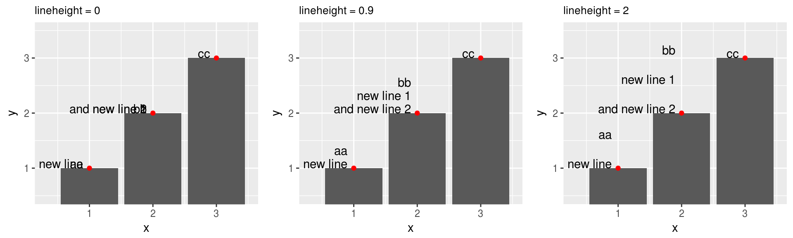
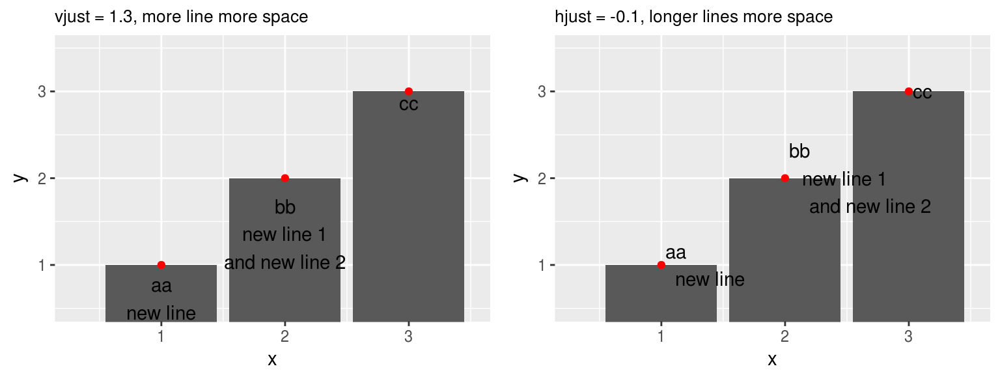

ggplot2: place text at right location
A common task in plotting is adding texts as labels or annotations to specific locations. ggplot() has functions geom_text(), geom_label() and annotate() for this purpose. In this post we discuss how ggplot2 controls positioning of text.
First we need to specify (x, y) coordinate in the plot where the text is placed. By default, the center of the text is at (x, y), which is sometimes not what we want, as shown in the example below.
library(ggplot2)
df <- data.frame(x = 1:3,
y = 1:3,
z = c("aa\nnew line", "bb\nnew line 1\nand new line 2", "cc"))
g <- ggplot(df, aes(x = x, y = y)) +
geom_col() +
geom_point(color = "red") +
coord_cartesian(xlim = c(0.3, 3.5), ylim = c(0.5, 3.5))
g + geom_text(aes(label = z)) +
labs(subtitle = "(x, y) set the position of text but often is not we want")
As the text has its own shape and size, we need to determine which part of the text to be superimposed at (x, y). This positioning is controlled by parameters hjust and vjust. Imaging the text is surrounded by a rectangle and a local coordinate originates at the bottom left corner of the rectangle, (hjust, vjust) then is a local position in the local coordinate. By default, hjust = 0.5 and vjust = 0.5, that is, the center of the rectangle is at (x, y). We can change them to match to (x, y) by borders or corners, as shown in the examples below. The positioning of text is still not ideal as it is too close to (x, y).
library(grid)
library(gridExtra)
g1 <- g + geom_text(aes(label = z), hjust = 0) +
labs(subtitle = "hjust = 0 place left side of the text to (x, y)")
g2 <- g + geom_text(aes(label = z), vjust = 1) +
labs(subtitle = "vjust = 1 place top of the text to (x, y)")
g3 <- g + geom_text(aes(label = z), hjust = 1, vjust = 0) +
labs(subtitle = "hjust = 1 and vjust = 0 place tottom\nright cornor of the text to (x, y)")
grid.arrange(g1, g2, g3, nrow = 1)
The parameters nudge_x and nudge_y shift whole text along x and y axis. With them we can add a space between text and (x, y).
g1 <- g + geom_text(aes(label = z), hjust = 0, nudge_x = 0.1) +
labs(subtitle = "nudge_x = 0.1 moves text to the right by 0.1")
g2 <- g + geom_text(aes(label = z), vjust = 1, nudge_y = -0.1) +
labs(subtitle = "nudge_y = -0.1 moves text down by 0.1")
g3 <- g + geom_text(aes(label = z), hjust = 1, vjust = 0, nudge_x = -0.1, nudge_y = 0.1) +
labs(subtitle = "nudge_x = -0.1 nudge_y = 0.1 to northwest")
grid.arrange(g1, g2, g3, nrow = 1)
For multi-line text, we also want to adjust the line space. The line space is set by parameter lineheight.
g1 <- g + geom_text(aes(label = z), hjust = 1, vjust = 0, nudge_x = -0.1, lineheight = 0) +
labs(subtitle = "lineheight = 0")
g2 <- g + geom_text(aes(label = z), hjust = 1, vjust = 0, nudge_x = -0.1, lineheight = 0.9) +
labs(subtitle = "lineheight = 0.9")
g3 <- g + geom_text(aes(label = z), hjust = 1, vjust = 0, nudge_x = -0.1, lineheight = 2) +
labs(subtitle = "lineheight = 2")
grid.arrange(g1, g2, g3, nrow = 1)
As a final note, some people use hjust and vjust that are < 0 or > 1 to shift text from (x, y). This works well to move up and down a single line text but not good to move left and right or multi-line text, as hjust and vjust are relative to dimension of the rectangle around the text. Some bad examples are shown below. So it is better to use nudge_x and nudge_y to shift whole text.
g1 <- g + geom_text(aes(label = z), vjust = 1.3) +
labs(subtitle = "vjust = 1.3, more line more space")
g2 <- g + geom_text(aes(label = z), hjust = -0.2) +
labs(subtitle = "hjust = -0.1, longer lines more space")
grid.arrange(g1, g2, nrow = 1)